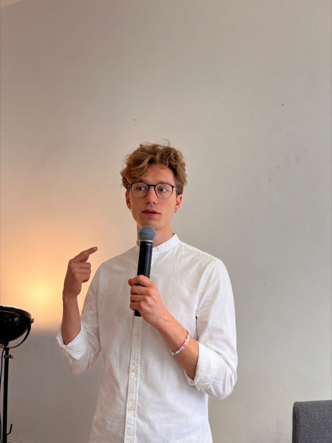

Die Seite sammelt Arbeiten und Gedanken zu Soziologie, Kunstgeschichte, Germanistik, Geschichte, BWL und Psychologie sowie kürzere Essays zu Themen, die gerade auf dem Tisch liegen.

B.A. BWL/Wirtschaftspsychologie. Studium der Soziologie, Kunstgeschichte, Germanistik und Geschichte an der Universität Hamburg.